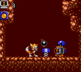

Well, this year wasn't exactly the best for Sonic, things started to grind to a halt as people were getting older and less interested. Sega did not lose faith though, and brought out games for the Game Gear, but no Mega Drive games as many owners were hoping, as the Mega Drive was giving way to more powerful consoles. Here are those games:
Sonic Drift 2 - Game Gear
March, 1995
 The sequel to Sonic Drift made it over here in the UK, and in the States, but it didn't seem to do any good as people just had little interest in the Game Gear anymore. It's a shame that, because it was a brilliant game.
See more information on Sonic Drift 2 - Game Gear
| |
Sonic Labyrinth - Game Gear
November, 1995
Tails Adventure - Game Gear
1995
 When Sonic didn't cut it, games moved onto Tails. Fortunately, this game was very popular indeed, and once again was very much different to the normal platforming outings that Sonic usually has. This had a mix between platform and RPG style gaming, and worked extremely well.
See more information on Tails Adventure - Game Gear
| |
Tails Sky Patrol - Game Gear
1995
 The first Tails game was very successful, but the second one wasn't that good in my opinion. It was only released in Japan, which may have been a good thing, it wouldn't have sold very well over here. It involved Tails flying to the exit. But it wasn't that simple. Many obstacles are planted to stop you, and if you touch a wall floor or surface, you die. o_O
See more information on Tails Sky Patrol - Game Gear
| |
Choose your next year!
<<1991 | 1992 | 1993 | 1994 | 1995 | 1996 | 1997 | 1998 | 1999 | 2000 | 2001>>
*If you have some important Sega/Sonic history, send it to
Dreadknux to put in the 10th Anniversary database!*
dreadknux@knuckles.co.uk
Fill in the form!
|